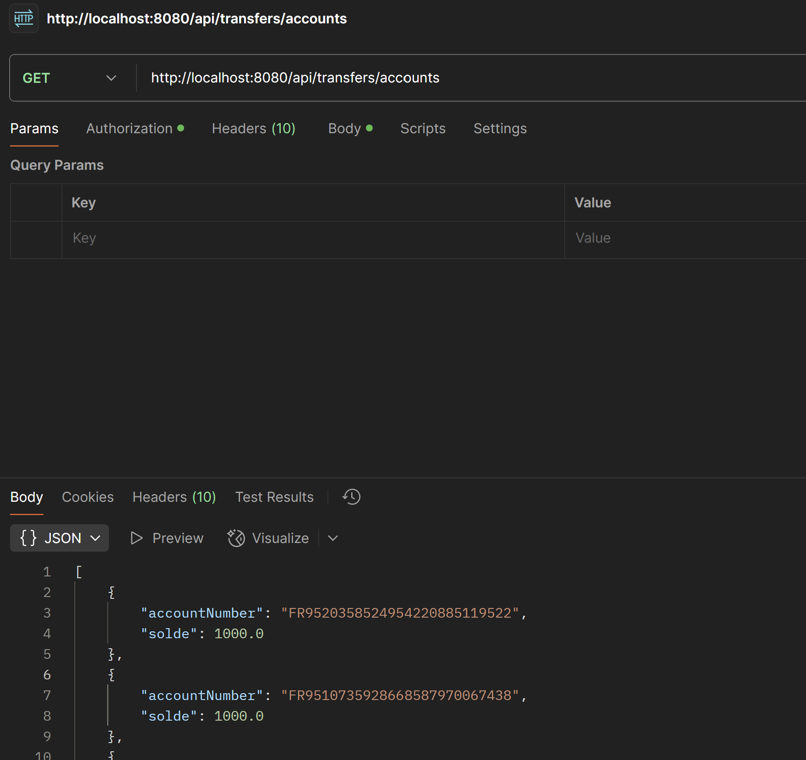

Étudiant en BTS SIO SLAM au lycée Bonaparte à Toulon, France | Baccalauréat SN RISC mention Très Bien | Développeur web | Développeur de jeux
Ma passion pour l'informatique remonte au collège, j'ai ensuite commencé à programmer fin 2021 au lycée. Je développe principalement des applications Web Back End ainsi que des jeux vidéos en 3D sur Unity. J'utilise des langages solides comme C#, JS, PHP, ainsi que tous les outils nécessaires pour accomplir le travail de manière efficace.
La programmation est une discipline fascinante, et à travers ce site web, vous trouverez des projets qui mettent en valeur mes compétences.


Certifications
Voici les certifications que j'ai passées
Autre certification obligatoire en première année, celle-ci vient de Cisco via NetAcad. Elle couvre les bases du matériel informatique, des systèmes d’exploitation, de l’entretien d’un PC et d’une approche réseau. Utile pour comprendre ce qu’il se passe 'sous le capot'.
(Lien indisponible directement, cours accédé avec compte de l'établissement)" >
(Lien indisponible directement, cours accédé avec compte de l'établissement)" >


Mes AP
Voici les AP sur lesquels j'ai travaillé en BTS SIO

üìå Le projet a √©t√© r√©alis√© en Java avec Spring Boot, √† partir d‚Äôune base technique fournie. Contrairement √† GSB, une grande partie du code et de la logique m√©tier a √©t√© d√©velopp√©e depuis z√©ro.
üß© Missions r√©alis√©es :
• Mission 1 : Test et amélioration de l’API de virement simple : Setup env, test des endpoints via Postman, ajout de logs, doc du code et retours API.
• Mission 2 : Validation des IBAN : Validateur d’IBAN conforme UE, exceptions personnalisées, singleton + tests unitaires.
• Mission 3 : API de virements par lots : Endpoint pour plusieurs virements en une requête, exécution async, gestion des échecs.
• Mission 4 : Rapports et notifications : Rapports JSON à la demande + envoi résumé par mail à l’utilisateur.
• Mission 5 : Sécurisation de l’API : Authentification via OAuth2, gestion des droits et comptes autorisés.
 " />
8 Mois de stages
Voici les stages que j'ai réalisés, cliquez dessus pour en savoir plus.

L'entreprise: Ortros
J'ai travaillé ici: 8 semaines
Mes missions:
Ma mission était de développer une API Node.JS qui
génère des articles de blog automatiquement avec l'IA.
Des articles avec images, avec le plugin WP que j'ai
développé, elle les publiera selon un planning.
×


Details sur l'expérience chez Ortros
L'objectif est de créer un plugin sur Wordpress permettant de générer des articles de blog de manière complétement automatisée. Il sera possible pour l'utilisateur, par le biais d'une interface créée à cet effet, de configurer ce générateur d'articles. Les articles seront générés à l'aide de l'intelligence artificielle, que ce soit pour les images ou pour le contenu. La génération sera faite à l'aide d'une API créé par Ortros et utilisé par les services d'OpenAI.
Développement d’un plugin WP en PHP simulant des appels à la future API:
Pendant les premières semaines du stage, je me suis donc concentré sur le développement du plugin WordPress. Ce plugin est d'apparence assez simpliste, il n'a que 3 champs. Un premier champ "Interval" qui définira l'intervalle à laquelle le Cron Job exécutera la création de posts de blog. Un second champ qui définira le sujet des posts, et une description qui détaillera le sujet des posts pour que l'IA ait suffisamment de données pour faire des posts sur le sujet.
Pour que ce plugin puisse s'implémenter sur un maximum de sites WordPress, on insérera les posts dans la table WP_POST créée automatiquement par WP. Après ça, la partie plugin était finie, j'ai donc commencé à me former à Node.JS pour ensuite commencer le développement de l'API, qui gérera la génération d'articles.
Pour l'API, j'ai initialisé un projet Node.JS avec Express et les dépendances nécessaires. La première étape a été d’implémenter l’authentification JWT, qui génère un token utilisateur contenant son nom et son mot de passe hashé. La clé de chiffrement est stockée dans un fichier .env pour la sécurité. J'ai créé un middleware et des routes pour l’authentification : une route register pour inscrire un utilisateur en vérifiant son existence et en hashant son mot de passe, et une route login qui renvoie un token après validation des identifiants. Une base SQLite stocke les utilisateurs.
Pour tester, j’ai développé une interface HTML avec un script JavaScript qui envoie les données aux routes et affiche les réponses. Ensuite, j’ai documenté les routes avec Swagger pour générer automatiquement une documentation sur /api-docs.
Enfin, j’ai commencé à implémenter les appels à l’API OpenAI pour générer du contenu, avec une route generate dédiée.
J’ai créé une route generate pour transmettre un prompt à ChatGPT et générer un article de blog avec images. Elle prend en paramètres le titre, la description, le nombre de tokens et d’autres options.
Un switch case permet de choisir le modèle ChatGPT et configure l’URL et les paramètres. Une requête POST est ensuite envoyée avec la clé API.
Si includeImages est activé, un prompt est envoyé à DALL·E pour générer une illustration, ajoutée ensuite à l’article.
J’ai aussi mis en place un système de crédits. Une variable de session stocke le solde de l’utilisateur, vérifiable via une route dédiée. Un système d’achats via Stripe a été ajouté, avec une route products pour récupérer les offres et une route Webhook pour valider les paiements et ajouter les crédits.
J’ai ajouté une route GET pour récupérer la liste des produits créés avec InitializeProducts.js, ce sera utile à l'avenir pour afficher une boutique de crédits sur le front.
La route Webhook gère les paiements Stripe : elle récupère le nombre de crédits achetés et met à jour la base de données utilisateur. J’ai ensuite ajouté un système de tags pour éviter de générer des articles trop similaires. ChatGPT exclut les tags existants, mais cette méthode consomme trop de tokens. Une future version utilisera des titres uniques à la place.
Enfin, j’ai mis en place un calcul des tokens consommés pour estimer le coût de chaque requête. Les images ont un coût fixe, tandis que le texte est analysé avec l'outil Tokenizer d’OpenAI pour un calcul précis.
J’ai ajouté les routes get-me et generation pour récupérer les infos utilisateur et la liste des articles générés. Ensuite, j’ai conçu un système de clés API pour permettre l’authentification via login sur BlogAI ou via clé API sur le plugin WP. Une table dédiée a été ajoutée, et chaque utilisateur reçoit une clé unique à l’inscription.
Puis, j’ai intégré l’API dans WP en ajoutant un champ pour la clé API dans l’UI, et en modifiant les requêtes pour fonctionner avec mon API. Les articles générés sont insérés dans wp_posts et traités par WordPress via un Cron Job. Enfin, j’ai rédigé un document de passation en HTML contenant les instructions et conseils pour les futurs développeurs.
Ce stage a été très enrichissant pour moi. Je remercie toute l’équipe d’Ortros pour leur accueil et pour le projet qu’ils m’ont donné. J’ai appris beaucoup en deux mois. J’espère pouvoir travailler à nouveau avec eux.
L'entreprise: ITSystems
J'ai travaillé ici: 5 semaines
Mes missions:
Ma mission était d'ajouter des fonctionnalités au projet
open-source RustDesk. J'ai aussi développé un exe
Python qui fonctionnait comme un onglet PowerShell
avec des boutons pour exécuter des commandes.
×


Details sur l'expérience chez ITSystems
ITSystems est une entreprise située dans la Zone Athélia 1 de La Ciotat. ITSystems fournit des ordinateurs "Kubb", fabriqués en Europe, pour les professionnels, notamment les professionnels de santé, en proposant ces ordinateurs avec des lecteurs de cartes de santé intégrés. Ils offrent également des services de maintenance pour les parcs informatiques de leurs clients.
L’entreprise ITSystems gère un large parc informatique à distance en utilisant des logiciels comme AnyDesk. Le problème est qu’avec des licences gratuites, il y a un temps d’attente entre chaque connexion, ce qui ralentit la maintenance du parc informatique. Mon objectif est donc de créer un client personnalisé de l’application Open Source RustDesk. Ce client devra porter le nom et le logo de l’entreprise en remplacement de ceux de RustDesk. Il sera également nécessaire de bloquer ou d’ajouter certains paramètres pour répondre aux besoins spécifiques de l’entreprise.
Une fois le projet RustDesk cloné localement, j’ai installé les dépendances nécessaires : Visual Studio Build Tools, VCPKG et LLVM, puis j’ai configuré les variables d’environnement de Windows. J’ai ensuite utilisé un script Python fourni pour compiler l’application, mais l’UI était absente à cause de la bibliothèque Sciter, devenue obsolète.
J’ai donc opté pour Flutter, nécessitant l’envoi des modifications sur GitHub et l’exécution d’un workflow pour générer un exécutable fonctionnel. Une fois cette étape réussie, j’ai exploré les options de personnalisation du client.
Pour automatiser cette personnalisation, j’ai utilisé RdGen, un outil web basé sur Django et des workflows GitHub. Après plusieurs tentatives d’hébergement local échouées, j’ai déployé l’application sur une machine virtuelle Debian via Proxmox. Avec cette infrastructure en place, j’ai pu tester et valider un premier client RustDesk personnalisé.
Malheureusement, cet outil en ligne (RdGen) ne me permettait pas d'ajouter des fonctionnalités (mot de passe admin, ajout de paramètres...). J’ai donc dû modifier directement le code source de RustDesk pour verrouiller certains paramètres, comme la découverte du réseau IP, en adaptant l’UI développée avec Flutter.
En parallèle, la personnalisation du logo s’est avérée complexe. Le nom "RustDesk" était disséminé dans de nombreux fichiers, et chaque modification nécessitait une recompilation complète via les workflows github, un processus très long dépassant souvent une heure.
Pendant ces longues compilations, j’ai avancé sur un projet secondaire : une application .exe facilitant la maintenance à distance via des commandes PowerShell automatisées. L’objectif était de concevoir une interface avec des boutons correspondant à des commandes courantes, tout en sécurisant l’accès par mot de passe.
J’ai choisi Python pour sa simplicité et sa compatibilité avec l’équipe de maintenance. L’UI a été développée avec Tkinter et comprend deux classes principales : "PasswordPrompt" pour l’écran de connexion et "ShellApp" pour l’interface principale. Pour sécuriser le mot de passe, j’ai prévu de le stocker dans un fichier .env.
Une fois le développement terminé, j’ai utilisé PyInstaller pour compiler l’application en un exécutable portable, incluant toutes les ressources nécessaires. L’objectif est d’avoir un outil léger et facile à utiliser sur n’importe quelle machine.
J’ai finalement abandonné la compilation via les workflows GitHub au profit d’une compilation Flutter locale, plus rapide et maîtrisable, en utilisant des scripts PowerShell personnalisés. Cela me permet d’éviter les contraintes des workflows distants et d’accélérer le processus.
Ainsi, j’ai pu compiler une version stable de RustDesk intégrant toutes mes modifications : changement de nom, personnalisation de l’interface et sécurisation des paramètres avec une boîte de dialogue protégée par mot de passe.
Cependant, un nouveau besoin est apparu : certains clients nécessitent la découverte des IP sur le réseau. Je vais donc réintégrer cette fonctionnalité (obsolète dans les versions de RustDesk que l'on utilise), en la verrouillant derrière une protection par mot de passe.
En parallèle, j’ai documenté mon travail et mis en place un serveur de test RustDesk sur une machine virtuelle Linux via Proxmox. Ce serveur inclut un Relay Server pour la gestion du flux vidéo et un S ignaling Server pour l’identification des clients.
Enfin, grâce aux dernières commandes PowerShell fournies par mon maître de stage, j’ai finalisé ITSTools. L’application est désormais complète et prête à être testée sur différentes machines.
J’ai tenté de restaurer la découverte d’IP, mais cette option ne fonctionne pas sur RustDesk v1.3.0. J’ai donc décidé de redévelopper cette option en affichant ou non sur le front, via flutter en dart.
Pour la dernière semaine, j'ai finalisé le client RustDesk en corrigeant l'option DirectIP, en ajoutant des classes Dart pour gérer la checkbox et l'affichage de l'option. J'ai également terminé la documentation pour faciliter l'installation et l'utilisation du client.
J'ai codé les commandes PowerShell manquantes pour l'application Python ITSTools, permettant d'installer et de configurer divers éléments sur Windows, comme la gestion des réseaux ou l'installation de logiciels en quiet install.
La difficulté principale a été de tout finir avant la fin du stage tout en documentant correctement les outils pour les autres collaborateurs.
En conclusion, ce stage m’a permis d’acquérir des compétences pratiques sur RustDesk et l'automatisation avec Python, et je remercie l’équipe d'ITSystems pour leur accueil et leur soutien.

L'entreprise: Alcineo
J'ai travaillé ici: 3 semaines
Mes missions:
Ma mission était de coder une appli Android
qui calculait la suite de Fibonacci et la
factorielle de N. J'ai codé cette appli en
Kotlin avec deux boutons pour Fibonacci et N.

L'entreprise: Le Bureau Ciotaden
J'ai travaillé ici: 8 semaines
Mes missions:
Ma mission était de réparer des ordinateurs,
smartphones et tout autre type d'ordinateurs
apportés par les clients.

L'entreprise: ILC
J'ai travaillé ici: 4 semaines
Mes missions:
Ma mission était de développer le site web de
l'entreprise en HTML et CSS, avec un système de
notation par étoiles. Ce site était l'un des premiers
que j'ai réalisés.

L'entreprise: Traxens
J'ai travaillé ici: 4 semaines
Mes missions:
Ma mission était d'ajouter l'auto-calibration lorsqu'un
scellé passait dans le capteur de détection de scellé.
Le programme était en C. Une fois cela fait, j'ai
rédigé la documentation pour le SDS.